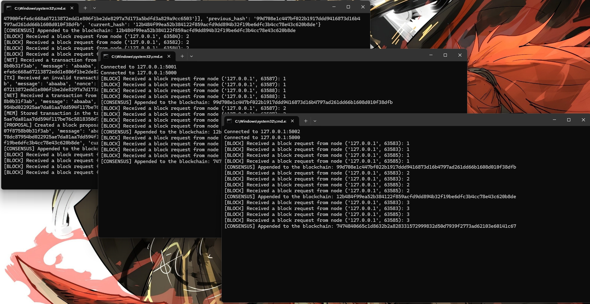

Axel HuPhone: (+61)4 9130 1188Email: botwhitegive@gmail.comEmail: xihu3610@uni.sydney.edu.auGithub: https://github.com/bot-white-g1veAn Dalyell Student (Computer Science & CyberSecurity) at The University of Sydney (USYD) with High distinction WAM. Participating in multiple AI research projects in USYD. Also have experience on Software Development. Continuously learning Business, Marketing, Product Management. My goal is to establish an AI company in Australia. Last update on: 2024/07/06Tips: You can hover over the image to enlarge it.
Artificial Intelligence Related Research
I have been working as an intern (Research Assistant) under the guidance of Dr.D.Liu, in Dr.C.Xu's lab in USYD, since second year. In the field of Deep Learning. (2023 August to now)I have also interned at Multimodal and Affective Laboratory of Hefei Industry University for 4 months during my first vacation on second year. My supervisor is Dr. J. Huang. In the field of Multimedia. (2023 November to 2024 March, 1 month online)I am current participating in Winter Vacation Internship Project of USYD, working under the supervision of Dr. M. Umair, in Dr. A. Bouguettaya's SCSLAB. In the field of Deepfake Detection. Until now, I have two essays submitted, one as the first author to ACM Multimedia Granted credits by Google Cloud & OpenAI Research.Details
Education Related Career
I have been working as a tutor for unit COMP2123 "Data Structure and Algorithm" under USYD School of Computer Science from 2023 November to 2024 July.I have been working as a tutor for off-campus educational institution Youxiu Education from 2022 December to 2024 June.Details
Software Development Related Career/Project
Some challenging and meaniful academic projects, for example a micro blockchain. Details here.A wiki developed for 'Project Moon' series of games, currently offline and out-of-maintenance due to study and research load. Screentshot of the webpages is attached here.Netshall: Top 12 project in SYNCS Hackton 2023 Details
Academic Study
No.1 High School of Chizhou, Jul 2019 - Jun 2022, High School: Math, Chinese, English, Physics, Chemistry, BiologyThe University of Sydney, Aug 2022 - now, Bachelor of Advanced Computing: Computer Science, CyberSecurity Dalyell scholarship (USYD's excellent student scholarship) link to official pageHD(High Distinction) Average Mark in USYD school transcriptDean's List of Excellence in Academic Performance detailsUndergraduate High Honour role detailsUCLA summer session: two months of study in UCLA. GPA:4.0 school transcriptAchievements in High School, including National/Provincial prices in Olympics tournaments Details
Other Commitments
English Fluency Proof: IELTS average 7.0Self-Learning Bussiness, Marketing, Product Management. As I am planning for establishing an AI company (As an AI developer and Product Manager)And many other activities participated. DetailsSummary
Experience
Undergraduate Research AssistantJul 2023 – PresentUniversity of SyndeyUnder supervision of Dr.D. Liu, In the field of Deep LearningResearch AssistantNov 2023 – Mar 2024Multimodal and Affective Laboratory of Hefei Industry UniversityUnder supervision of Dr.J. Huang, in the field of multimediaVacation Research InternshipJun 2024 – PresentUniversity of Syndey SCSLABUnder supervision of Dr.M. Umair, in the field of Deepfake detectionTutorNov 2023 – Jun 2024University of SydneyFor unit COMP2123, Data Structure and AlgorithmTeaching AssistantAug 2019 - Aug 2022No.1 High School of ChizhouMath class representative (teaching assistant) in high school
Education
No.1 High School of ChizhouJul 2019 - Jun 2022, High SchoolMath, Chinese, English, Physics, Chemistry, BiologyThe University of SydneyAug 2022 - Present, Bachelor of Advanced ComputingComputer Science, CyberSecurityThe University of California, Los AngelesJun 2024 - Aug 2024, Exchange Study ProgramCommunication Studies
Language
Mandarin: NativeEnglish: Full ProfessionalJapanese: ElementaryMy SkillsProgramming Language: Python, C, C#, JavaProgramming Language are learnt through University and by practice since Junior HighMachine Learning & Deep Learing: CV, NLP, AIGC, etcML&DL learnt through research careerBackend Dev: Security, Flask(Python), SQLFrontend Dev: HTML, CSS, JavaScriptDatabase Related: SQL, RLearnt though UniGame Dev: C#, UnityResearch & Essay ProducingComputer ScienceCyberSecurityProject ManagementLearnt though UniProduct ManagementSoftware DevelopmentLearnt though UniServer Configuration & MaintenanceLearnt though maintaining my own game serverVideo editing: PR, PS, UTAULanguage: Chinese, English, Japanese(elementary)Japanese is learnt though Uni Elective unitsResearch CareerI have been working in the field of "Deep Learning, Computer Vision, Image Generation, Video Analytics, Surgical Analysis, Large Language Model, Multimedia, Antificial Intelligence" in several laboratories in USYD"Surgical Triplet Recognition via Diffusion Model" submitted"Surgical Triplet Anticipation in Laparoscopic Videos for Decision Support" submittedCurrently working on Deepfake & NLP(LLM)Granted credits by Google Cloud & OpenAI Research.Academic Performance in USYDDalyell scholar (USYD's excellent student scholar) link to official pageHD(High Distinction) Average Mark in USYD school transcriptDean's List of Excellence in Academic Performance detailsUndergraduate High Honour role detailsUCLA summer session: two months of study in UCLA. GPA:4.0 school transcript Academic Projects in USYDA traversal support website the github pageA secure online chat room and forum the github page A micro Blockchain the github page

A Federated Learning system for distributive Machine Learning the github page A simple BitTorrent the github pageA chess game the github pageEnglish Fluency ProofIELTS average 7.0: Listening 7.5, Reading 8.5, Writing 6.0, Speaking 6.0.
You may need to zoom in to see the picture clearNational third prize in National English Proficiency Test for Secondary school studentsTutoring ExperienceThe tutoring experience in USYD has taught me a lot. It taught me how to create an interactive teaching environment and how to communicate effectively with others.Duty: Tutoring, Marking, Producing answer sheet.Other commitment: Answering on Ed platform.Highlight: Sharing my course materials (ppt, pdf, code, etc) and frequently asked questions on Ed platform.Highlight: Provided suggestions adopted by the coordinator.Academic Performance in high schoolScore 643 in Chinese College Entrance Exam (GaoKao), ranking 1817th out of 543,000 (top 0.3%) in the province Government-issued certificateReceive A for all the subjects in Graduation Exam (Huikao)National third prize in National English Proficiency Test for Secondary school studentsProvincial third prize in National Math Olympics tournamentProvincial twice prize in National Physics TournamentServe as Math class representative (teaching assistant)Golden model in Training Alliance of the model high school’s spring tournamenProvincial first prize in FLTRP cup National English CompetitionGroup prize in English words competition of No.1 high school of ChizhouNational second prize in 23rd National English Speech Competition for Secondary School Students Game ProjectsI love playing computer games. My exploring of coding starts from developing mini-games and maintaining game serversI have created this self-made unofficial wiki for 'Project Moon' Game Series. The webpages are in Chinese. Also, I used to maintain a MineCraft serverOther CommitmentsParticipated in SYNCS Hackton 2023: Proposed our project--Netshall, where people can create chatrooms on a map. The top twelve project in Hackton. Link to Project PageSome volunteers: Chizhou No.1 Hospital / NOFFS sorting / Engage Asia / USYD helpdesk. Participated in the Interdisciplinary Teamwork Research of a USYD PhD student.


.png)